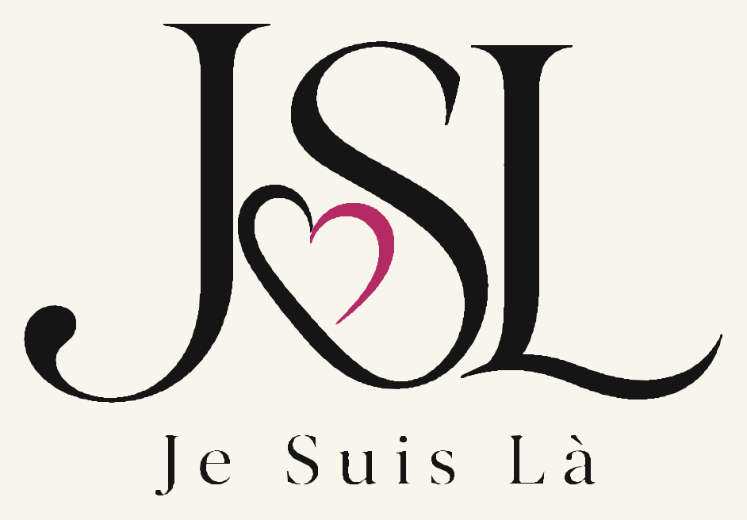
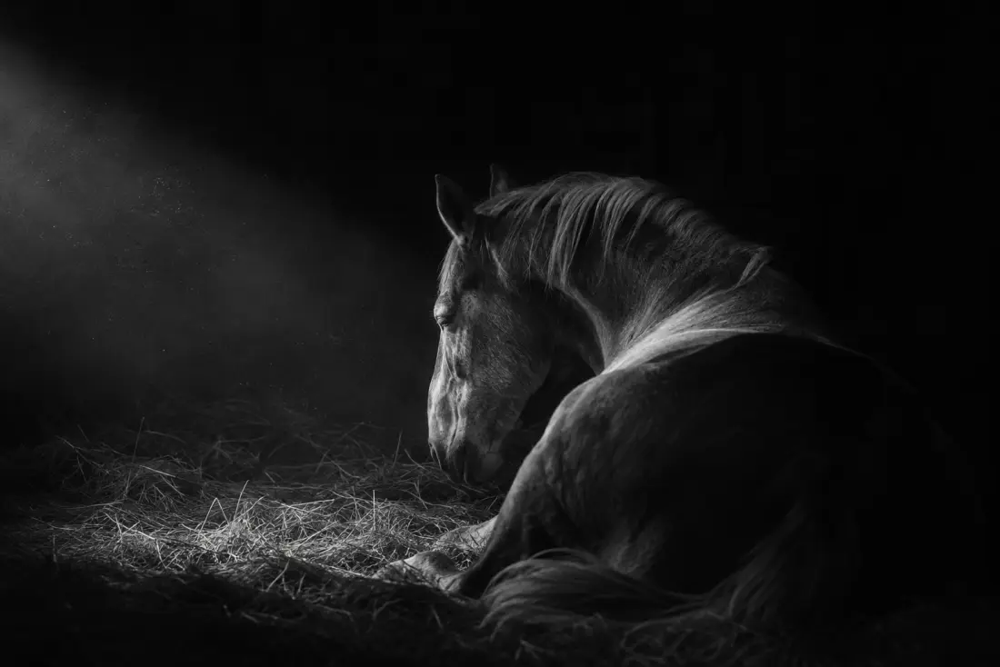
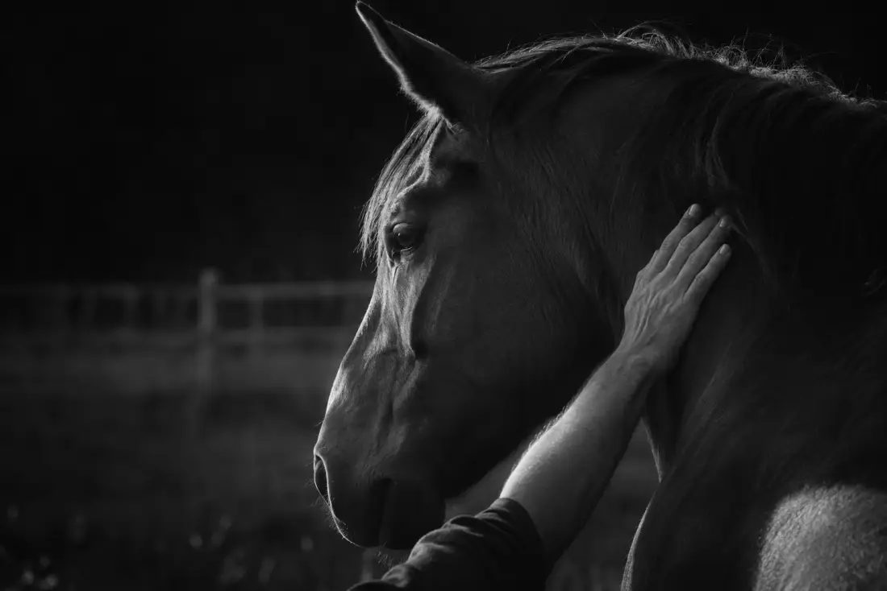
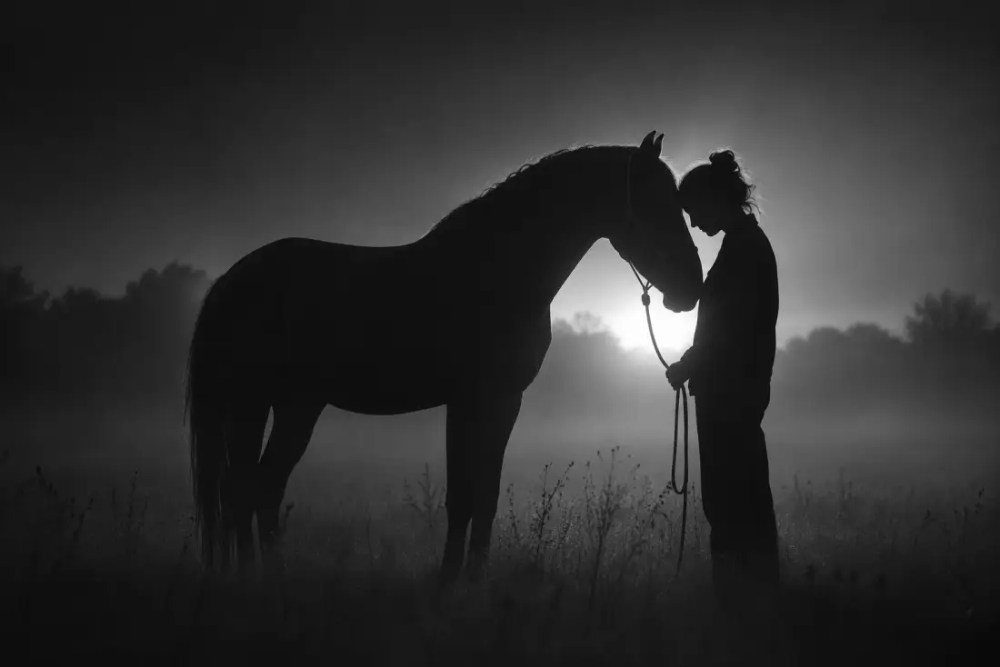
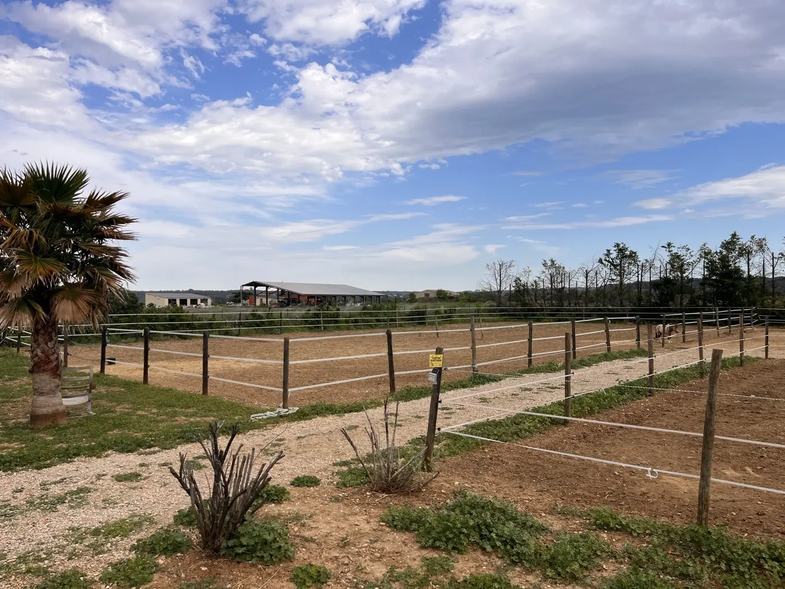

Pension retraite et convalescence pour chevaux, garde de chevaux à domicile dans un rayon de 30 km, séances de médiation animale avec le cheval. Une activité indépendante, hébergée sur le domaine.
JSL – Je Suis Là est une activité indépendante, exercée à l'Arche du Négadis, à Paulhan (34230). L'élevage met ses installations et son cadre à disposition ; les prestations décrites sur cette page sont rendues et facturées par JSL, sous sa seule responsabilité.
Derrière JSL, il y a Magali, installée en entreprise individuelle sous le régime micro-entrepreneur. Le métier tient en une idée : prendre le relais auprès d'un animal quand son propriétaire ne peut pas, et accompagner les personnes que le lien à l'animal aide à traverser un moment. La prestation se règle sur le besoin de l'animal, pas sur un forfait standard.
Pour toute question sur l'élevage, les poulains, la pension équine ou les gîtes, c'est l'Arche du Négadis qu'il faut joindre. Pour les trois prestations ci-dessous, c'est JSL.

Comptez sur moi.
Appuyez-vous sur eux.
Pour les animaux. Pour le lien qui nous unit.

JSL accueille à Paulhan (Hérault) des chevaux qui demandent un quotidien adapté : repos après un effort, convalescence après une blessure ou une opération, retraite. Le rythme de la journée, l'alimentation et les soins sont réglés sur l'état de l'animal, après un point avec le propriétaire et, s'il y a lieu, avec son vétérinaire.
Ce n'est pas une pension classique. Un cheval qui doit rester au calme, qui reprend après une immobilisation ou qui vieillit n'a pas les mêmes besoins qu'un cheval de travail : c'est à ces situations-là que l'accueil adapté répond.
Lieu : à l'Arche du Négadis, Chemin du Negadis, 34230 Paulhan. Tarifs communiqués par JSL au 07 62 62 72 60.

Pendant une absence, un déplacement professionnel ou un imprévu, JSL prend le relais auprès des chevaux chez leur propriétaire, dans leur environnement habituel. Alimentation, eau, surveillance, sortie et soins convenus à l'avance : le cheval reste chez lui, ses repères ne bougent pas.
C'est ce que le métier appelle l'équi-sitting. L'intérêt, par rapport à un déplacement en pension pour quelques jours, est d'éviter à l'animal le stress du transport et du changement de lieu — ce qui compte particulièrement pour un cheval âgé, anxieux ou sous traitement.
Secteur de proximité : 30 km autour de Paulhan. Tarifs communiqués par JSL au 07 62 62 72 60.

Des rencontres individuelles avec le cheval, à l'Arche du Négadis à Paulhan, pour prendre du recul et traverser un moment de vie, au rythme de chacun. Une séance se passe au sol, sans monter, dans le calme du domaine ; le cheval ne juge pas et renvoie ce qu'on lui apporte, ce qui suffit souvent à remettre les choses à leur place.
Cette pratique porte plusieurs noms selon les milieux : accompagnement par le cheval, médiation animale, parfois équithérapie. Ils désignent ici la même chose, des séances individuelles au contact du cheval.
Ces séances ne sont pas un soin. Elles ne constituent ni un acte médical, ni une psychothérapie, et ne remplacent pas un suivi par un professionnel de santé. Elles s'adressent à qui veut souffler, pas à qui cherche un traitement.
Lieu : à l'Arche du Négadis, Chemin du Negadis, 34230 Paulhan. Tarifs communiqués par JSL au 07 62 62 72 60.
Les deux se trouvent Chemin du Negadis, à Paulhan. Ce ne sont pas la même offre, et ce n'est pas la même personne qui répond.
| Pension de l'Arche du Négadis | Pension retraite de JSL | |
|---|---|---|
| Pour qui | Un cheval en bonne santé, hébergé durablement | Un cheval au repos, en convalescence ou en fin de carrière |
| Ce qu'on y trouve | Box, paddocks, carrière de travail, rond de longe | Un quotidien réglé sur l'état de l'animal |
| Qui répond | L'Arche du Négadis — 06 20 55 78 67 | JSL – Je Suis Là — 07 62 62 72 60 |
Pour les prestations à domicile, le secteur de proximité de JSL couvre un rayon de 30 km autour de Paulhan (34230). Clermont-l'Hérault est à 10 minutes, Pézenas à 15, Gignac à 15, Lodève à 20. L'A75 passe à proximité.
L'accueil équin et les séances de médiation animale, eux, se déroulent à l'Arche du Négadis, à Paulhan. Au-delà des 30 km, un déplacement se décide au cas par cas, selon la prestation et la fréquence.

Les installations de l'Arche du Négadis, à Paulhan, où JSL exerce.
Les demandes concernant les trois prestations se font directement auprès de JSL – Je Suis Là.
Non. JSL – Je Suis Là est une activité indépendante, qui exerce sur le site de l'Arche du Négadis à Paulhan. L'élevage met ses installations à disposition ; il ne rend pas ces prestations et ne les facture pas. Les demandes se font directement auprès de JSL, au 07 62 62 72 60.
La pension de l'élevage héberge durablement des chevaux en bonne santé, avec carrière, rond de longe et paddocks. L'accueil équin adapté de JSL s'adresse à un cheval qui demande une attention particulière sur une période donnée : repos, convalescence, fin de carrière. Les deux se trouvent à la même adresse mais relèvent de deux interlocutrices différentes.
Pour les prestations à domicile, le secteur de proximité de JSL couvre un rayon de 30 km autour de Paulhan (34230). Il comprend notamment Clermont-l'Hérault, Pézenas, Gignac, Lodève, Aspiran, Canet et Saint-Pons-de-Mauchiens. Au-delà, le déplacement se décide au cas par cas. L'accueil équin et les séances de médiation animale, eux, se déroulent à l'Arche du Négadis, à Paulhan.
Non. JSL – Je Suis Là est une activité professionnelle, facturée. Elle n'est pas une association de retraite gratuite et ne reprend pas de chevaux à titre gracieux. Les propriétaires qui cherchent à placer un cheval sans frais doivent se tourner vers les associations spécialisées.
Non. La médiation animale, parfois appelée équithérapie, désigne des rencontres individuelles avec le cheval, pour prendre du recul à son rythme. Ces séances ne sont ni un acte de soin ni une prise en charge médicale, et ne remplacent pas un suivi par un professionnel de santé.
Par téléphone au 07 62 62 72 60 ou par courriel à hello.jslpro@gmail.com. Ces coordonnées sont celles de JSL – Je Suis Là, distinctes de celles de l'Arche du Négadis.
Page mise à jour le .